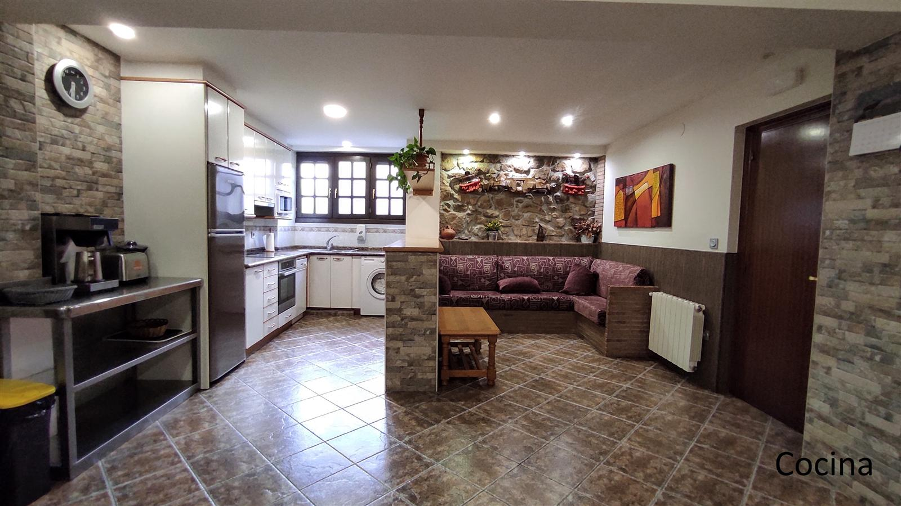
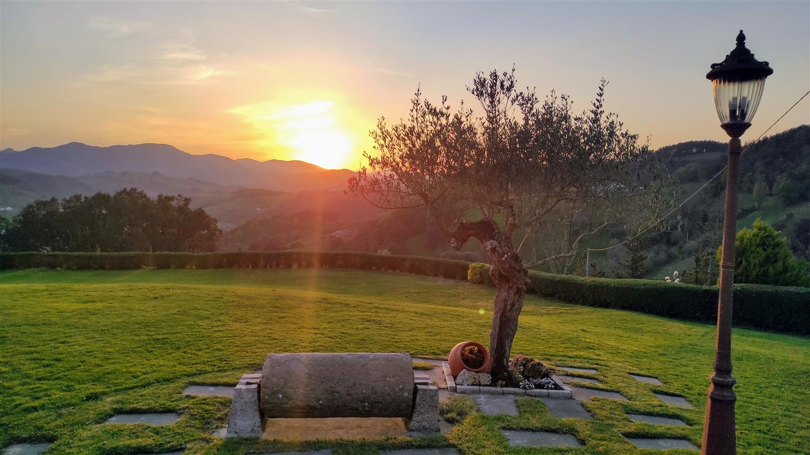
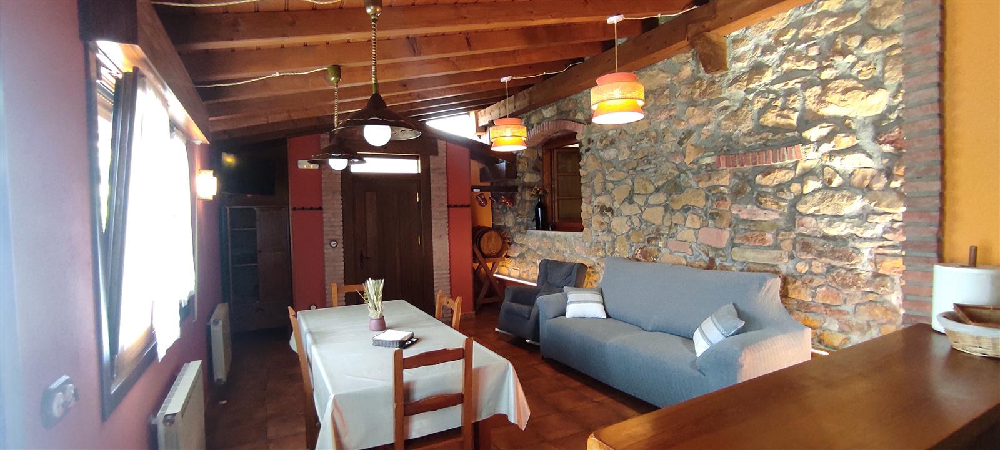
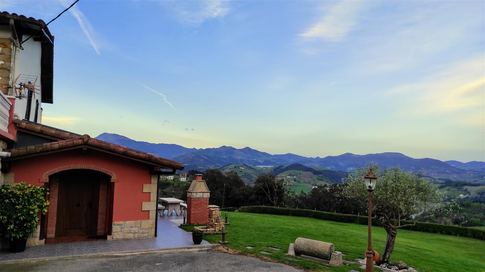
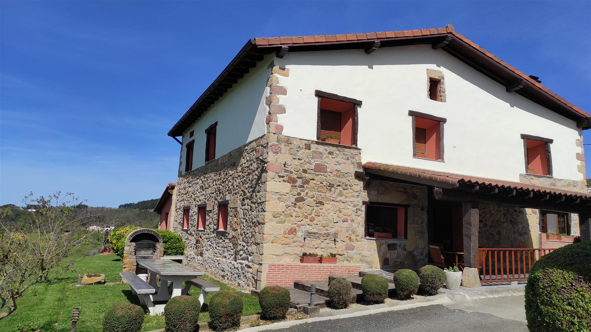
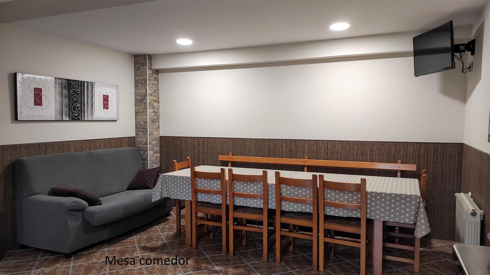
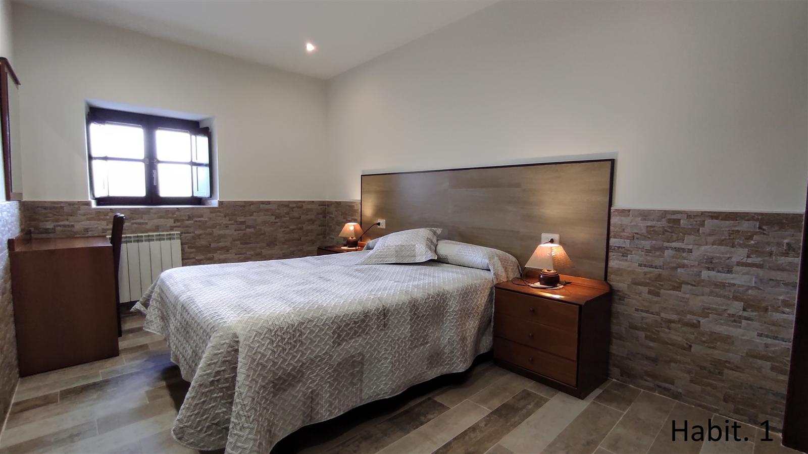
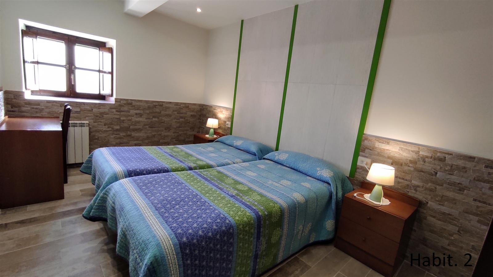
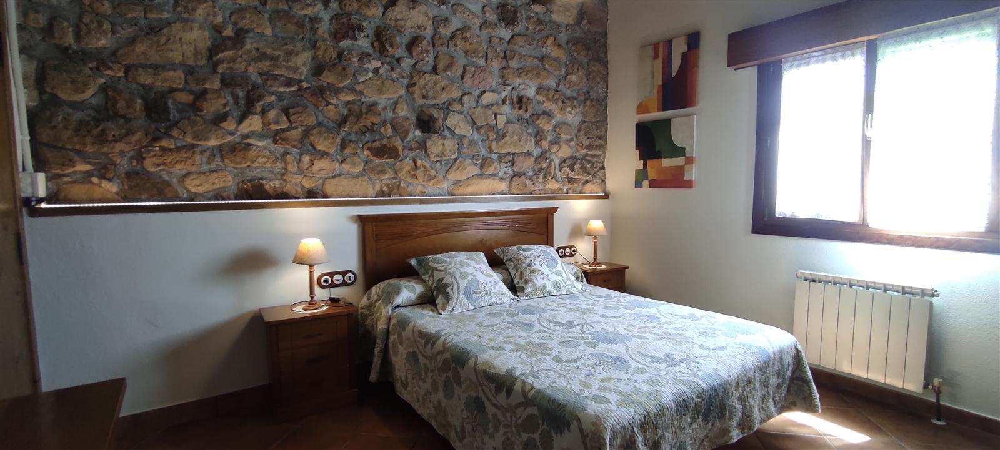
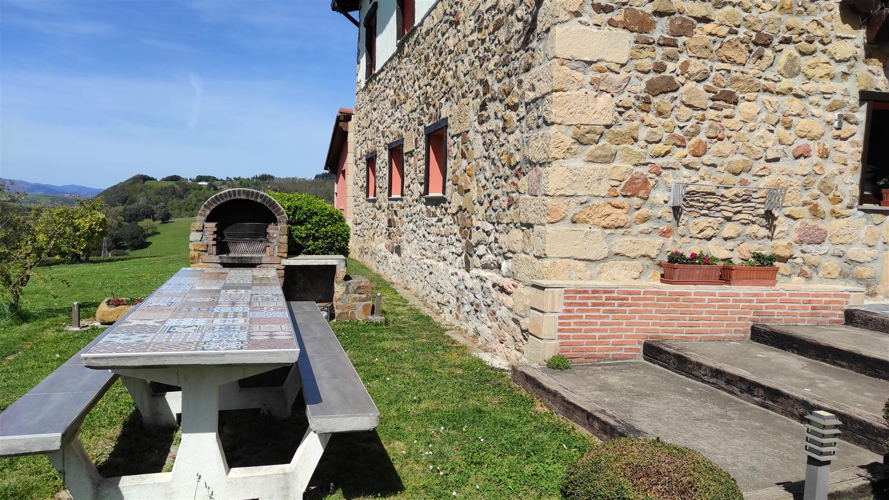

Casa rural
95 m² en la planta baja, con acceso independiente. Cocina completa, sala con tele y barbacoa en el jardín.
- 4 habitaciones dobles
- 2 baños
- 8 plazas + 1
- Calefacción central
215–225 €por noche · IVA incluido

★ 5 de 5 102 opiniones en Google
Una casa rural para 8 y dos apartamentos en el barrio Meaga, entre viñedos de txakoli, con jardín, barbacoa y vistas al monte. A 4,5 km de la playa de Zarautz.
Alojamientos
Se alquila entera y cada alojamiento tiene su propia entrada. Estancia mínima de dos noches.

95 m² en la planta baja, con acceso independiente. Cocina completa, sala con tele y barbacoa en el jardín.

Amplio apartamento rústico de 90 m², con acceso independiente y amplio jardín con barbacoa.

60 m² con una habitación amplia con cama de matrimonio, baño y cocina-comedor.
Precios 2026
| Por noche | Temporada alta | Resto del año |
|---|---|---|
| Casa rural8 plazas + 1 supletoria | 225 € | 215 € |
| Apartamento 14 plazas + 2 supletorias | 130 € | 110 € |
| Apartamento 22 plazas + 1 supletoria | 95 € | |
| Cama supletoria | 10 € | |
Temporada alta: de abril a septiembre, puentes y festivos. Estancia mínima de 2 noches. IVA incluido.
Qué hay en la casa
Se alquila entera
Acceso independiente
Jardín
Barbacoa
Cocina completa
Calefacción central
Wifi gratis
Cuna gratis
No se admiten animales






5102 opiniones en Google
Opiniones
«Los dueños desde que reservamos sólo nos pusieron facilidades para todo. Cuando llegamos a la casa superó nuestras expectativas.»
Alfonso M. · grupo de 10
«Un lugar encantador, unas vistas increíbles, tranquilo y apartado pero muy bien comunicado con Zarautz y Getaria.»
Is M. · familia de 9
«La casa, como siempre, perfecta: muy limpia, cuidada y sin faltarle ningún detalle. Además, las vistas son espectaculares.»
Copri · repiten
Lo que más repiten quienes vienen: que María Jesús y Carlos están pendientes de todo y que os aconsejan qué visitar por la zona.
El entorno
El pueblo de Elkano, con su puerto, sus asadores de pescado a la parrilla y el txakoli de Getaria.
Su playa de 2 kilómetros, por la carretera de la costa.
El flysch, las playas de Itzurun y Santiago, y rutas por los acantilados.
La Concha, la parte vieja y los pintxos, a media hora en coche.
Cómo llegar